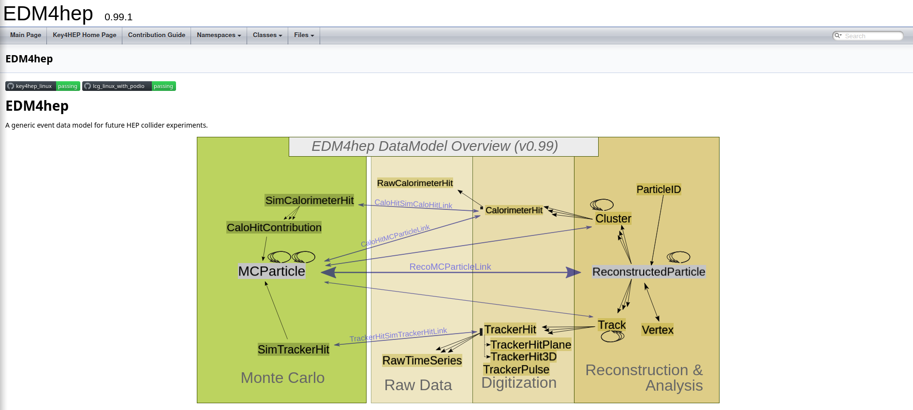
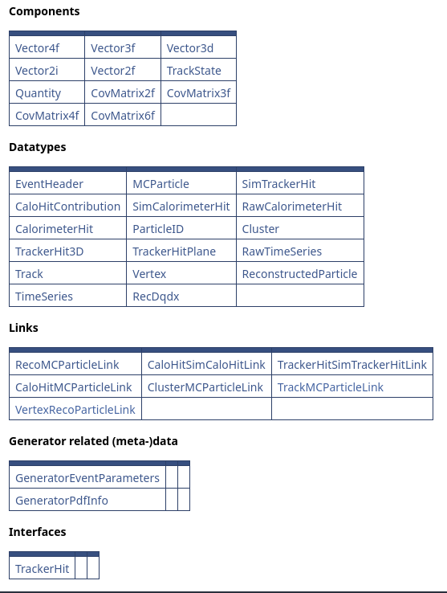
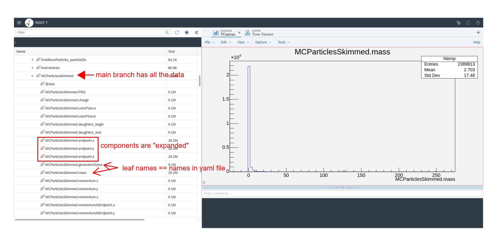
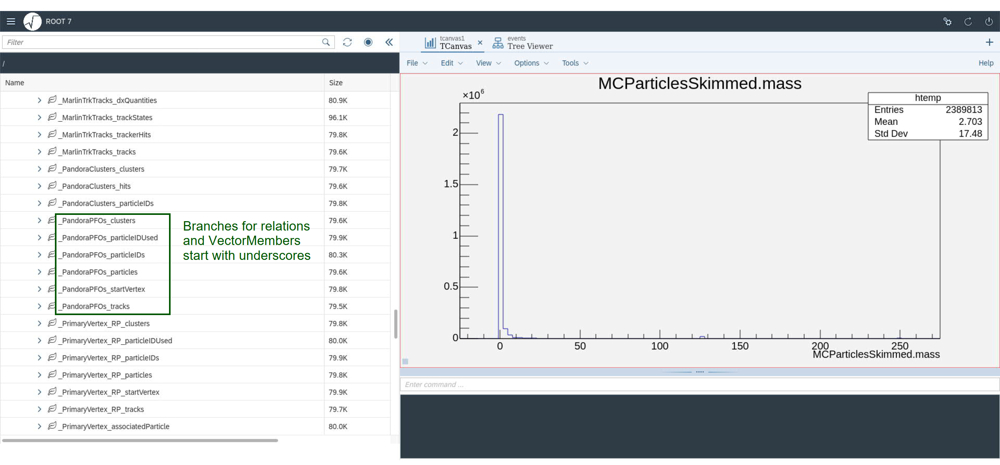

EDM4hep - The common event data model
EDM4hep is the common and shared Event Data Model (EDM) of the Key4hep project. Here we will give a brief introduction to EDM4hep as well as some of the technicalities behind it. We will also guide you towards documentation and try to give you the knowledge to make sense of it.
Important resources
EDM4hep doxygen API reference page: edm4hep.web.cern.ch
EDM4hep github repository: github.com/key4hep/EDM4hep
podio documentation page (including API reference): key4hep.web.cern.ch/podio
podio github repository: github.com/AIDASoft/podio
Doxygen API documentation
We start with having a look at the EDM4hep doxygen API reference page:
The overview diagram

You see a diagrammatic overview of EDM4hep with all the available data types, broadly organized into different categories. The arrows depict two ways data types can be related / linked with each other
“Relations” (black arrows)
“Links” (purple-ish arrows)
Relations
These are relations defined within the data types, and which are directly accessible from the data types. They come in two flavors, depending on the multiplicity of the relation
OneToOneRelationsOneToManyRelations
Data types can relate to other instances of the same type (e.g. MCParticles
usually form a hierarchy of mothers/daughters). Relations are directed, i.e. it
is possible to go from one object to a related object, but vice versa this does
usually not hold. For example, a ReconstructedParticle can point to multiple
Tracks or Clusters, but those do not point to a ReconstructedParticle.
Links
These are relations that are in a sense “external” to the data model definition. They are currently mainly used to connect MC and RECO information, as a direct link via a relation is not desirable as it would mix the two worlds. In contrast to relations, links are not directed, i.e. it is possible to access both involved objects from the link.
The table of available types
Just below the diagram is an overview table of all the types that are defined in EDM4hep. Here they are organized into
Components- Very simple types, that are used throughout theDatatypesDatatypes- The data types that are defined in EDM4hepLinks- The available links between different data typesGenerator related (meta-)data- Data types related to generator metadataInterfaces- Abstractions for accessing different types by a shared set of properties

Clicking on any of these links will take you to the
edm4hep.yaml
definition file of EDM4hep, jumping directly to the definition of the respective
datatype or component. For more information on this file check out the section
about podio. In
principle it is possible to have very educated guesses on how the interface of
the classes will look like from this.
Some utility functionality
EDM4hep also brings a bit of utility functionality. You can find it in the
edm4hep::utils
namespace (click on
Namespaces -> Namespace List, then expand the edm4hep namespace and then
click on utils to arrive at this link).
podio - The technical infrastructure on which things run
podio is an EDM toolkit that is used by and developed further in the Key4hep context. The main purpose is to have an efficiently implemented, thread safe EDM starting from a high level description. For more (gory) details have a look at the github repository.
Here we will describe the code generation, and its implications for EDM4hep. A
bit further down we will describe how to read and
write podio (root) files and the podio-dump tool to inspect
files without having to open them.
podio code generation
The podio code generator is a python script that reads in the EDM definition in yaml format, does a few basic validation checks on the definition, and then generates all the necessary code via the Jinja2 template engine.

The generated code should (among other things)
be efficient,
offer an easy to use interface,
offer performant I/O.
Having automated code generation has a few advantages:
Freeing the user from the repetitive task of implementing all the types themselves
Freeing the user from having to deal with all the details of how to do things efficiently
Making it very easy to roll out improved implementations (or bug fixes) via simply regenerating the code
The three layers of podio
To achieve the goals stated above podio favors composition over inheritance and uses plain-old-data (POD) types wherever possible. To achieve this podio employs a layered design, which makes it possible to have an efficient memory layout and performant I/O implementation, while still offering an easy to use interface

The User Layer is the top most layer and it offers the full functionality and is the only layer with which users interact directly. It consists mainly of the collections and lightweight handle classes, i.e.
XYZCollectionXYZMutableXYZ
The Object Layer consists of the
XYZObjclasses, that take care of all resource management and which also enable the relations between different objects.The POD Layer at the very bottom is where all the actual data lives in simple
XYZDataPOD structs. These are the things that are actually stored in, e.g. root files that are written by podio.
Basics of generated code - value semantics
The generated c++ code offers so called value semantics. The exact details of what this actually means are not very important, the main point is that you can treat all objects as values and you don’t have to worry about inefficient copies or managing resources:
auto recos = edm4hep::ReconstructedParticleCollection();
// ... fill, e.g. via
auto p = recos.create();
// or via
auto p2 = edm4hep::ReconstructedParticle();
recos.push_back(p2);
// Loop over a collection
for (auto reco : recos) {
auto vtx = reco.getStartVertex();
// do something with the vertex
// loop over related tracks
for (auto track : reco.getTracks()) {
// do something with this track
}
}
This looks very similar to the equivalent python code (if you squint a bit, and ignore the autos, ; and {} ;) )
recos = edm4hep.ReconstructedParticleCollection()
# ... fill, e.g. via
p = recos.create()
# or via
p2 = edm4hep.ReconstructedParticle()
recos.push_back(p2)
# Loop over a collection
for reco in recos:
vtx = reco.getStartVertex()
# do something with the vertex
# loop over related tracks
for track in reco.getTracks():
# do something with the tracks
The python interface is functionally equivalent to the one c++ interface, since
that is implemented via PyROOT. There are some additions that make the python
interface more pythonic, e.g. len(recos) is equivalent to recos.size().
Nevertheless, the doxygen reference is valid for both interfaces.
Guessing the interface from the yaml definition
Since all code is generated, it is usually pretty straight forward to guess how
the interface will look like just from looking at the definition in the yaml
file. For EDM4hep the general rule is to get a Member variable, a
OneToOneRelation, a OneToManyRelation or a VectorMember is to simply
stick a get in front of the name in the yaml file and to capitalize the first
letter., e.g.
Members:
- edm4hep::Vector3f momentum // the momentum in [GeV]
will turn into something like
const edm4hep::Vector3f& getMomentum() const;
Similar, but in slightly more nuanced rules apply for the methods that are
generated for setting a value. For Member variables and OneToOneRelations
the general rule is to stick a set in front of the name in the yaml file and
to capitalize the first letter, e.g. (continuing from above)
void setMomentum(edm4hep::Vector3f value);
For the OneToManyRelations and VectorMembers the rule is to stick a
addTo in front of the name in the yaml file and to capitalize the first
letter, e.g.
OneToManyRelation:
- MCParticle daughters // the daughters of this particle
will be generated to
void addToDaughters(MCParticle daughter);
Why is there a XYZ and a MutableXYX?
The underlying technical reasons are rather complex, dive quite deepish into c++
nuances, and definitely far beyond the scope of this tutorial. In short: We need
two different handle classes in order to control whether users are allowed to
modify things or not. As one of the main goals of podio generated EDMs is to be
thread safe the default generated class for each data type allows only for
immutable read access, i.e. it provides only the get methods. Only the
Mutable classes actually have the set methods, and can hence be used to
actually modify objects. The most important implication of this is the
following: Everything that you read from file, or that you get from the Gaudi
TES is immutable. I.e. there is no way for you to change or update the values
that you read. The only way to “update” values (or collections) is to actually
copy the contents and then store the updated values back. Independent copies of
objects can be obtained with the clone` method.
Writing function interfaces
The Mutable objects implicitly convert to an instance of a default class.
Hence, always use the default classes when specifying function interfaces
(obviously this only works if you only need read access in the function). There
is no implicit conversion from the default, immutable objects to the Mutable
objects!
As an example
void printE(edm4hep::MCParticle particle) {
std::cout << particle.getEnergy() << '\n';
}
void printEMutable(edm4hep::MutableMCParticle particle) {
std::cout << particle.getEnergy() << '\n';
}
int main() {
auto mutP = edm4hep::MutableMCParticle();
p.setEnergy(3.14);
printE(mutP); // Works due to implicit conversion
printEMutable(mutP); // Obviously also works
// Now we create an immutable object
auto P = edm4hep::MCParticle();
printE(P); // Obviously works
printEMutable(P); // BREAKS: No conversion from default to Mutable
return 0;
}
Subset collections
Similar to LCIO, podio generated EDMs offer a subset collection functionality. This allows to create collections of objects, that are actually part of another collection, e.g. to simply collect all the muons that are present in a larger collection of reconstructed particles:

To create a subset collection, simply do
auto muons = edm4hep::ReconstructedParticleCollection();
muons.setSubsetCollection();
// You can now add objects that are part
// of another collection to this one via push_back
muons.push_back(recos[0]);
Reading a subset collection works exactly the same as reading a normal collection. This is handled in a transparent way, such that you usually don’t even realize that you are operating on a subset collection.
The podio::Frame container
The podio::Frame is a generalized event. It is a container that aggregates
all relevant data (and some meta data). It also defines an implicit interval of
validity (but that is less relevant for this tutorial). It provides a thread
safe interface for data access
Immutable read access only for collections that are stored inside the a
FrameAll data that is inside a
Frameis owned by it, and this is also reflected in its interface.

Here we will just briefly introduce the main functionality, for more details see the documentation in podio.
Getting collections from a Frame
Assuming that event is a podio::Frame in the following code examples,
getting a collection can be done via (c++)
auto& mcParticles = event.get<edm4hep::MCParticleCollection>("MCParticles");
or (python)
mcParticles = event.get("MCParticles")
This retrieves the collection that is stored under the name MCParticles with
type edm4hep::MCParticleCollection. If no such collection exists, it will
simply return an empty collection of the desired type. As you can see, the type
is automatically inferred in python. Note that get returns a const&, so it
is required to actually put the & behind auto in c++, otherwise there will
be a compilation error complaining about a copy-constructor being marked
delete.
Putting a collection into a Frame
When putting a collection into a Frame you give up ownership of this
collection. To signal this to the users, it is necessary to move the
collection into a Frame. Again assuming event is a podio::Frame in the
following examples, this looks like this
auto recos = edm4hep::ReconstructedParticleCollection();
event.put(std::move(recos), "ReconstructedParticles");
Note the requirement to explicitly use std::move in this case. At this point
recos is moved into the event, and you are left with an object in a
valid but unspecified state that you
should under normal circumstances no longer use after this point. (Technically
we do enough that you still can use this, but don’t expect the results to match
your expectations).
Reading EDM4hep files
EDM4hep files are read with tools provided by podio. As podio supports multiple
different backends there are several, low level readers that support all the
necessary functionality. You can obviously use these readers directly, but we
recommend to use the Reader class and the makeReader function that will
dispatch to the correct low level reader automatically.
#include <podio/Reader.h>
#include <edm4hep/MCParticleCollection.h>
int main() {
auto reader = podio::makeReader("some_file_containing_edm4hep.data.root");
// Loop over all events
for (size_t i = 0; i < reader.getEvents(); ++i) {
auto event = reader.readNextEvent();
auto& mcParticles = event.get<edm4hep::MCParticleCollection>("MCParticles");
// do more stuff with this event
}
return 0;
}
The available low level readers
ROOTReader- The default reader for TTree based filesROOTLegacyReader- The reader for an old podio format based on TTreesRNTupleReader- A reader for RNTuple based filesSIOReader- The reader for reading files using the SIO backendSIOLegacyReader- The reader for the SIO backend with an old podio format
The Legacy readers are stated here mainly for completeness, in case you need
to read a rather old file that still used the EventStore which has been
removed from podio some time ago. See
here for more information on how to
figure out whether the file you are interested in is a legacy file or not.
As podio is a rather low level tool, also the interface of these readers feel
somewhat low level. This is mostly visible in the fact, that you have to provide
a category (name) when getting the number of entries, or when reading the next
entry. This is because in principle podio can handle multiple different
categories of Frames in one file. For the purpose of this tutorial and also
for the majority of use cases, simply use "events" as category name. Readers
in podio do not return a podio::Frame directly, rather they just return some
frame data from which a podio::Frame can be constructed. Putting all of
these things together, a simple event loop looks like this in c++:
#include "podio/ROOTReader.h"
#include "podio/Frame.h"
#include "edm4hep/MCParticleCollection.h"
int main() {
auto reader = podio::ROOTReader();
reader.openFile("some_file_containing_edm4hep_data.root");
// Loop over all events
for (size_t i = 0; i < reader.getEntries("events"); ++i) {
auto event = podio::Frame(reader.readNextEntry("events"));
auto& mcParticles = event.get<edm4hep::MCParticleCollection>("MCParticles");
// do more stuff with this event
}
return 0;
}
The equivalent python code looks like this
from podio import root_io
reader = root_io.Reader("some_file_containing_edm4hep_data.root")
# if you want to read legacy files use root_io.LegacyReader
for event in reader.get("events"):
mcParticles = event.get("MCParticles")
# do more stuff with this event
ROOT file layout of podio generated EDMs
podio generated EDMs, i.e. also EDM4hep, use ROOT as their default I/O backend. Since everything is based on PODs, the produced root files are pretty straight forward to read and interpret (with some caveats). They are already almost flat ntuples.


How do I figure out if a file is legacy?
Use
podio-dumpand it will tell you
$podio-dump /home/workarea/data/rv02-02.sv02-02.mILD_l5_o1_v02.E250-SetA.I402003.Pe2e2h.eL.pR.n000.d_dstm_15089_0_edm4hep.root
input file: /home/workarea/data/rv02-02.sv02-02.mILD_l5_o1_v02.E250-SetA.I402003.Pe2e2h.eL.pR.n000.d_dstm_15089_0_edm4hep.root
Frame categories in this file (this is a legacy file!):
[...]
Peek inside the root file and look at the contents


podio-dump
The podio-dump utility allows to inspect EDM4hep files from the command line.
The synopsis looks like this
$podio-dump --help
usage: podio-dump [-h] [-c CATEGORY] [-e ENTRIES] [-d] [--dump-edm DUMP_EDM] [--version] inputfile
Dump contents of a podio file to stdout
positional arguments:
inputfile Name of the file to dump content from
options:
-h, --help show this help message and exit
-c CATEGORY, --category CATEGORY
Which Frame category to dump
-e ENTRIES, --entries ENTRIES
Which entries to print. A single number, comma separated list of numbers or "first:last" for an inclusive range of entries. Defaults to the first entry.
-d, --detailed Dump the full contents not just the collection info
--dump-edm DUMP_EDM Dump the specified EDM definition from the file in yaml format
--version show program's version number and exit
By default it prints how many events are present in the file and also a summary
of the contents of the first event. This overview consists of the names, data
types and number of elements of the collections that are stored in this event.
Using the --detailed flag, podio-dump will print the complete contents of
all collections in ASCII format. This can be quite a bit of information. Using
the --entries flag it is possible to choose which events to look at. The
--categories flag is an advanced feature and not necessary for this tutorial.
podio-dump will also tell you whether the file that is passed to it is a
legacy file in which case you will need the ROOTLegacyReader or the
SIOLegacyReader to read it.